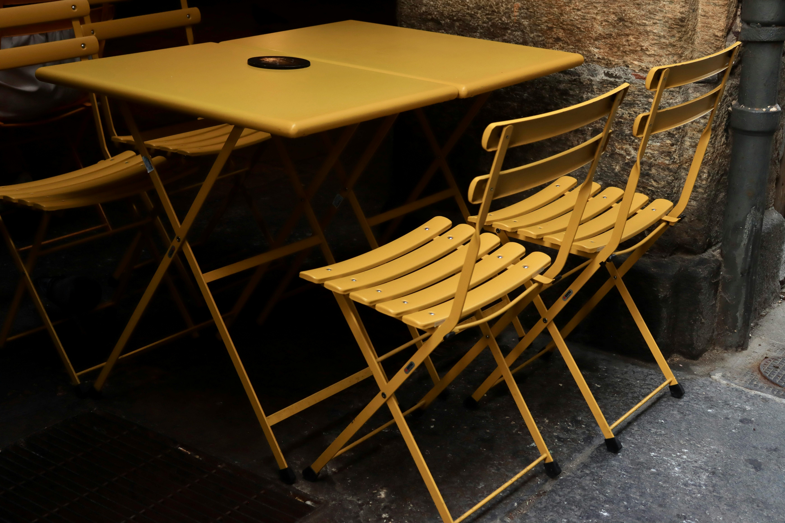
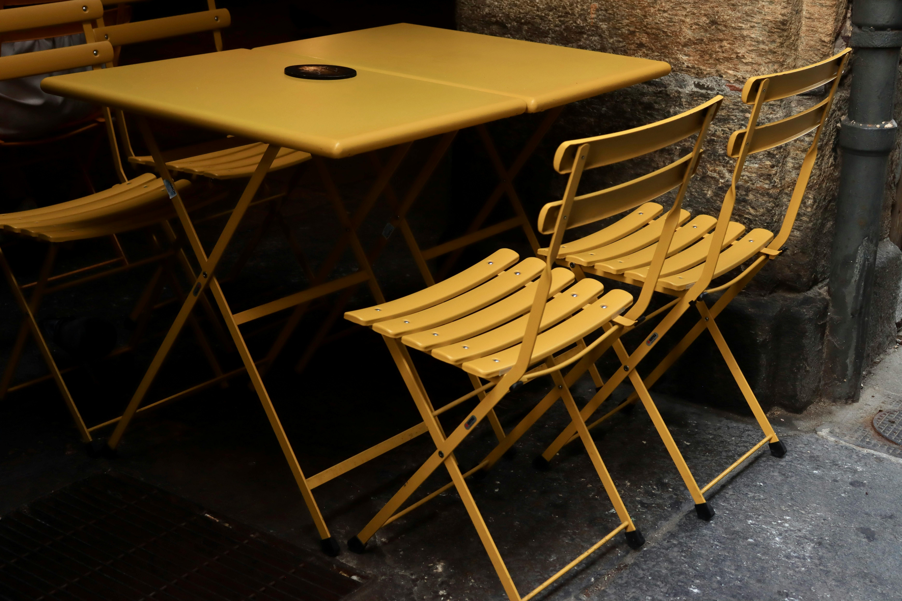

We know that the BST is structured such that all elements to the right of a node are greater and all elements to the left are smaller.
Knowing this, we can start at the root node and compare it with the element, X, that we are looking for.
If X is greater to the root, we move on to the root's right child.